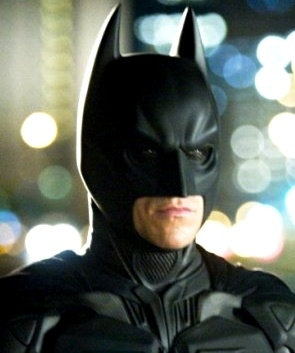
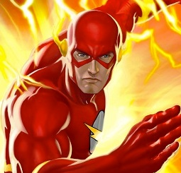

Bagmee Sampanna - In the Batman series, Batman, portrayed by the character Bruce Wayne, is an ecentric billionaire who is in for adventure and in seek of things that he knows little about. After choosing to get two lives, he chooses to let as less number of people know about his true identity as possible, is not attracted by the glory he would have got had he chosen to get to the forefront, instead, he chooses to work stealthily. Similarly, an introvert and the leader of the group, Bagmee chooses to do most of the work and not let many know the extent her work holds importance. She is well known for her excellent research skills and as the one to exert influence on people and one to get the flow of the discussion going; preventing procrastination.
Although the description seems perplexing, she, in reality is quite calm, simple and has an habit of being brutally honest with everything. As she grows to understand life less and less, she learns to `love it more and more. 'The future is not in the hands of fate, but ours', this notion is something that she believes in.
"It's not who I am underneath, but what I do that defines me"
_Bagmee Sampanna
Deepraj Pandey - In the Avengers and the Iron Man series, as Tony Stark aka the Iron Man is portrayed as someone good at computers (bad at attitude) and building fancy stuff with complex algorithms and simple hardware installations, this , with surprisingly high resemblance to the fictional character, had the greatest contribution as this here, what you are looking at, which is a part of the series of projects submitted by High Schoolers in India under the CS category can, very well be called his brainchild while he chooses to very humbly deny it stating that the contribution of his work-a-holic teammates was equally important and that he would not have been able to complete this project without their precious feedback, ideas, and sheer company. A positive vibe is what he says he finds in some mates' presence. *winks*
This was just one part of him. His other part is somewhat contradicting to the impression judgmentals make of him. He believes that patience, and his extreme optimism are gifts by God. Trying is something that doesn't make him infirm, rather, it makes him impassioned. He seems to be quite careless about other judgmentals' impression on him, what is important is what he thinks. The glow of one warm thought holds more value than anything.
"A famous man once said, 'We create our own demons.' Who said that? What does that even mean? Doesn't matter. I said it 'cause he said it. So now, he was famous and that basically getting said by two well-known guys. I don't, uh... I'm gonna start again."
_Deepraj Pandey
Subhasmita Priyadarsani - Aggressive, thoughtful, as the Arrow, she knows ways to get around situations easily and finds it easy to blend herself in situations which may prove difficult for quite too many people. Holds similar views when compared with the Starling City vigilante, keeping morality aside. Known for her secret analystic skills; a feminist with a strong will, she is not a person who should be bossed. She is a judge of her own actions. Resembling her character with arrow, it can be said that she does her work with full potential and appraises everyone to do the same. Like the Arrow in the series, she is the person with the will to stop evil things around her. She proved to be very helpful for the team. An introvert on the outside, devises her own ways to do things."You only live once, but if you do it right, it's enough" this is what she believes in. "My dream is to fulfill dreams of people who are in need, its complicated but its true, this is what makes me different.(my dreams, my destiny)"_Subhasmita Priyadarsani

Mohammed Anas - Senile, fast, thinks on his feet, has a thing for Chemistry and Forensics. No, it is not the Flash from Central City we are talking about. It is Anas, a member wth a dream to be a Software Engineer, and the one who gave exclusive insights to being one which was quite a lot of information that we couldn't fit in the given space and had to cut short his 3-hour long lecture to just 5 minutes [he is a fast speaker]. Much to our awe, he showed off his designing skills by contributing in the layout of the Website. A hardcore soccer fan, his philosophy is that, there is always something more to everything irrespective of the amount of knowledge one has in any given field of interest. An introvert on the outside, devises his own ways to do things and has decent analytical skills which were quite a contribution to the project.
"... ... ... ... .., .. ... ... ... .:. ... ... ... ... ... ... ... ... ... ... ... ... ... ... ... ... ... ...
Was it that fast?"
_Mohammed Anas